mycat 分库分表中间件
- Mycat是开源的、活跃的、基于Java语言编写的MySQL数据库中间件。可以像使用mysql一样来使用mycat，对于开发人员来说根本感觉不到mycat的存在。
- 开发人员只需要连接MyCat即可，而具体底层用到几台数据库，每一台数据库服务器里面存储了什么数据，都无需关心。
- 官网地址：http://www.mycat.org.cn/
安装
- 参看后面github示例。
目录介绍
- bin: 存放可执行文件，用于启动停止mycat。
- conf：存放mycat的配置文件。
- lib：存放mycat的项目依赖包（jar）。
- logs：存放mycat的日志文件。
概念
- 在MyCat的整体结构中，分为两个部分：上面的逻辑结构、下面的物理结构。
- 在MyCat的逻辑结构主要负责逻辑库、逻辑表、分片规则、分片节点等逻辑结构的处理，而具体的数据存储还是在物理结构，也就是数据库服务器中存储的。
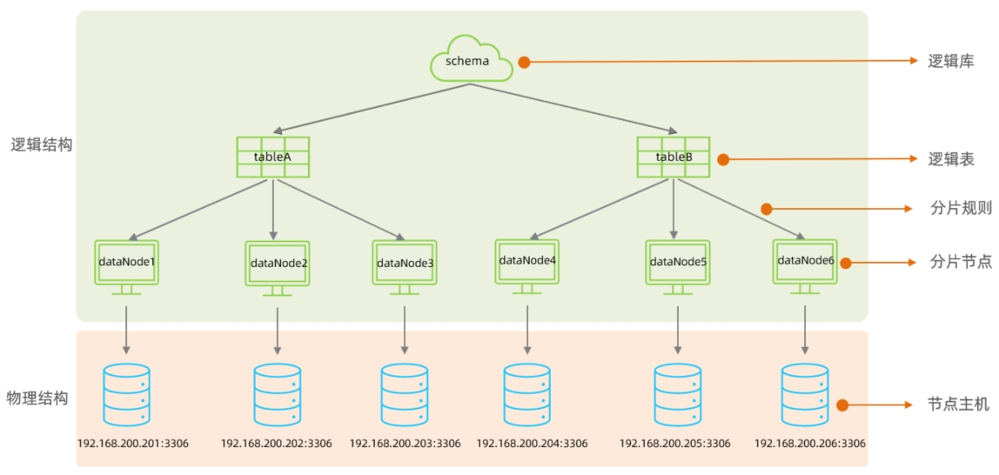
其他
- 9066 端口，用于查看MyCat监控信息。
- 8066 端口，用于与mysql数据交换。
- 9066 端口支持命令。(通过：mysql -h localhost -uroot -P9066 -p123456 连接)
- 以下介绍部分命令。更多通过：show @@help; 查看。
| —————-命令—————- | 作用 |
|---|---|
| show @@server | 查看服务器状态，包括占用内存等 |
| show @@database | 查看数据库 |
| show @@heartbeat | 前后端物理库的心跳检测情况,RS_CODE为1表示心跳正常 |
| show @@datanode | 查看数据节点 |
| show @@datasource | 查看数据源 |
| show @@connection | 该命令用于获取 Mycat 的前端连接状态，即应用与 mycat 的连接 |
| show @@backend | 查看后端连接状态 |
| show @@cache | 查看缓存使用情况，SQLRouteCache：sql路由缓存。TableID2DataNodeCache：缓存表主键与分片对应关系，ER_SQL2PARENTID ：缓存 ER 分片中子表与父表关系 |
| reload @@config | 重新加载基本配置，使用这个命令时 mycat服务不可用 |
| show @@sysparam | 查看参数 |
| show @@sql.high | 执行频率高的 SQL |
| show @@sql.slow | 慢 SQL 设置慢 SQL 的命令：reload @@sqlslow=5 |
MyCat配置
schema.xml
- schema.xml作为MyCat中最重要的配置文件之一 , 涵盖了MyCat的逻辑库、逻辑表、分片规则、分片节点及数据源的配置。
|
|
schema标签
- schema标签用于定义MyCat实例中的逻辑库, 一个MyCat实例中, 可以有多个逻辑库, 可以通过schema标签来划分不同的逻辑库。
- MyCat中的逻辑库的概念，等同于MySQL中的database概念，需要操作某个逻辑库下的表时，也需要切换逻辑库(use xxx)。
|
|
- schema 属性：
- name：指定自定义的逻辑库库名。
- checkSQLschema：在SQL语句操作时指定了数据库名称，执行时是否自动去除；true：自动去除，false：不自动去除。
- sqlMaxLimit：如果未指定limit进行查询，列表查询模式查询多少条记录。
- table标签定义了MyCat中逻辑库schema下的逻辑表，所有需要拆分的表都需要在table标签中定义。
- schema.table 属性：
- name：定义逻辑表表名，在该逻辑库下唯一。
- dataNode：定义逻辑表所属的dataNode，该属性需要与dataNode标签中name对应；多个dataNode逗号分隔。
- rule：分片规则的名字，分片规则名字是在rule.xml中定义的。
- primaryKey：逻辑表对应真实表的主键。
- type：逻辑表的类型，目前逻辑表只有全局表和普通表，如果未配置就是普通表；全局表配置为global。
datanode标签
- 该标签用于定义节点。
|
|
- dataNode 属性：
- name：定义数据节点名称。
- dataHost：数据库实例主机名称，引用自dataHost标签中name属性。
- database：定义分片所属数据库。
datahost标签
- 该标签在MyCat逻辑库中作为底层标签存在, 直接定义了具体的数据库实例、读写分离、心跳语句。
|
|
- dataNode 属性：
- name：唯一标识，供上层标签使用。
- maxCon/minCon：最大连接数/最小连接数。
- balance：负载均衡策略，取值 0,1,2,3。
- writeType：写操作分发方式（0：写操作转发到第一个writeHost，第一个挂了，切换到第二个；1：写操作随机分发到配置的writeHost）。
- dbDriver：数据库驱动，支持 native、jdbc。
rule.xml
- rule.xml中定义所有拆分表的规则, 在使用过程中可以灵活的使用分片算法, 或者对同一个分片算法使用不同的参数, 它让分片过程可配置化。主要包含两类标签：tableRule、Function。
|
|
- autopartition-long.txt
# range start-end, data node index
# K=1000,M=10000
0-500M=0
500M-1000M=1
1000M-1500M=2
server.xml
- server.xml配置文件包含了MyCat的系统配置信息，主要有两个重要的标签：system、user。
|
|
- 主要配置MyCat中的系统配置(system)信息，对应的系统配置项及其含义，如下：
| 属性 | 取值 | 含义 |
|---|---|---|
| charset | utf8 | 设置Mycat的字符集, 字符集需要与MySQL的字符集保持一致 |
| nonePasswordLogin | 0,1 | 0为需要密码登陆、1为不需要密码登陆 ,默认为0，设置为1则需要指定默认账户 |
| useHandshakeV10 | 0,1 | 使用该选项主要的目的是为了能够兼容高版本的jdbc驱动, 是否采用HandshakeV10Packet来与client进行通信, 1:是, 0:否 |
| useSqlStat | 0,1 | 开启SQL实时统计, 1 为开启 , 0 为关闭 ;开启之后, MyCat会自动统计SQL语句的执行情况 ; mysql -h 127.0.0.1 -P 9066-u root -p 查看MyCat执行的SQL, 执行效率比较低的SQL , SQL的整体执行情况、读写比例等 ; show @@sql ; show @@sql.slow ; show @@sql.sum |
| useGlobleTableCheck | 0,1 | 是否开启全局表的一致性检测。1为开启 ，0为关闭 |
| sqlExecuteTimeout | 1000 | SQL语句执行的超时时间 , 单位为 s |
| sequnceHandlerType | 0,1,2 | 用来指定Mycat全局序列类型，0 为本地文件，1 为数据库方式，2 为时间戳列方式，默认使用本地文件方式，文件方式主要用于测试 |
| sequnceHandlerPattern | 正则表达式 | 必须带有MYCATSEQ或者 mycatseq进入序列匹配流程 注意MYCATSEQ_有空格的情况 |
| subqueryRelationshipCheck | true,false | 子查询中存在关联查询的情况下,检查关联字段中是否有分片字段 .默认 false |
| useCompression | 0,1 | 开启mysql压缩协议 , 0 : 关闭, 1 : 开启 |
| fakeMySQLVersion | 5.5,5.6 | 设置模拟的MySQL版本号 |
| defaultSqlParser | 由于MyCat的最初版本使用了FoundationDB的SQL解析器, 在MyCat1.3后增加了Druid解析器, 所以要设置defaultSqlParser属性来指定默认的解析器; 解析器有两个 :druidparser 和 fdbparser, 在MyCat1.4之后,默认是druidparser,fdbparser已经废除了 | |
| processors | 1,2…. | 指定系统可用的线程数量, 默认值为CPU核心x 每个核心运行线程数量; processors 会影响processorBufferPool,processorBufferLocalPercent,processorExecutor属性, 所有, 在性能调优时, 可以适当地修改processors值 |
| processorBufferChunk | 指定每次分配Socket Direct Buffer默认值为4096字节, 也会影响BufferPool长度,如果一次性获取字节过多而导致buffer不够用, 则会出现警告, 可以调大该值 | |
| processorExecutor | 指定NIOProcessor上共享businessExecutor固定线程池的大小;MyCat把异步任务交给 businessExecutor线程池中, 在新版本的MyCat中这个连接池使用频次不高, 可以适当地把该值调小 | |
| packetHeaderSize | 指定MySQL协议中的报文头长度, 默认4个字节 | |
| maxPacketSize | 指定MySQL协议可以携带的数据最大大小, 默认值为16M | |
| idleTimeout | 30 | 指定连接的空闲时间的超时长度;如果超时,将关闭资源并回收, 默认30分钟 |
| txIsolation | 1,2,3,4 | 初始化前端连接的事务隔离级别,默认为REPEATED_READ , 对应数字为3READ_UNCOMMITED=1;READ_COMMITTED=2; REPEATED_READ=3;SERIALIZABLE=4 |
| sqlExecuteTimeout | 300 | 执行SQL的超时时间, 如果SQL语句执行超时,将关闭连接; 默认300秒; |
| serverPort | 8066 | 定义MyCat的使用端口, 默认8066 |
| managerPort | 9066 | 定义MyCat的管理端口, 默认9066 |
MyCat分片
垂直拆分

- 在业务系统中，涉及以下表结构，但是由于用户与订单每天都会产生大量的数据，单台服务器的数据存储及处理能力是有限的，可以对数据库表进行拆分，原有的数据库表如下。
- 现在考虑将其进行垂直分库操作，将商品相关的表拆分到一个数据库服务器，订单表拆分的一个数据库服务器，用户及省市区表拆分到一个服务器。
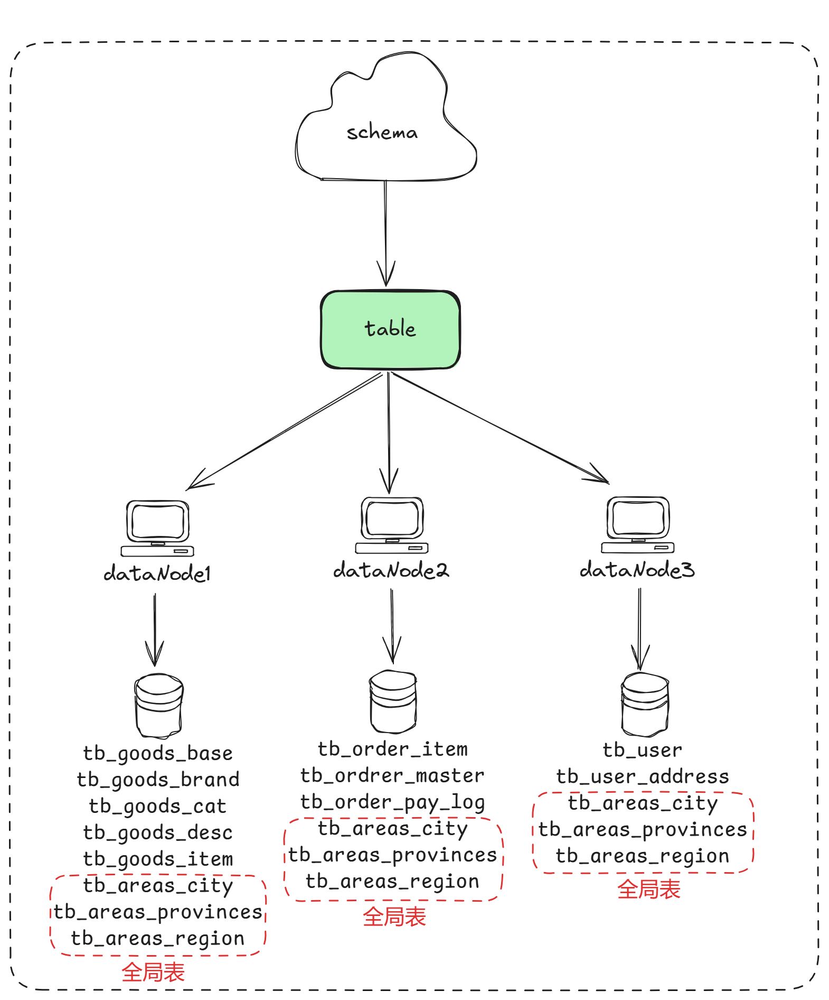
| 名称 | IP | 端口 |
|---|---|---|
| MyCat | 172.16.0.10 | 8066,9066 |
| mysql1 | 172.16.0.101 | 3306 |
| mysql2 | 172.16.0.102 | 3307 |
| mysql3 | 172.16.0.103 | 3308 |
schema.xml
|
|
server.xml
|
|
github
- 完整代码参看github。https://github.com/helium-chain/mycat-vertical
水平拆分
- 在业务系统中,有一张表(日志表),业务系统每天都会产生大量的日志数据,单台服务器的数据存储及处理能力是有限的,可以对数据库表进行拆分。

| 名称 | IP | 端口 |
|---|---|---|
| MyCat | 172.16.0.10 | 8066,9066 |
| mysql1 | 172.16.0.101 | 3306 |
| mysql2 | 172.16.0.102 | 3307 |
| mysql3 | 172.16.0.103 | 3308 |
schema.xml
|
|
server.xml
|
|
rule.xml
|
|
github
分片规则
范围分片
- 根据指定的字段及其配置的范围与数据节点的对应情况，来决定该数据属于哪一个分片。
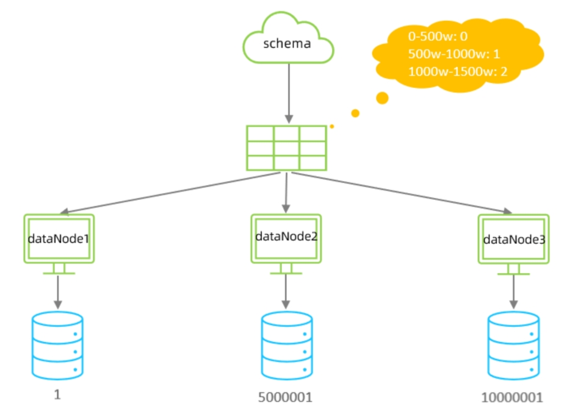
- schema.xml逻辑表配置：
|
|
- rule.xml分片规则配置：
|
|
- 在rule.xml中配置分片规则时，关联了一个映射配置文件 autopartition-long.txt，该配置文件的配置如下：
# range start-end ,data node index
# K=1000,M=10000.
# 0-500万之间的值，存储在0号数据节点
0-500M=0
# 500万-1000万之间的数据存储在1号数据节点
500M-1000M=1
# 1000万-1500万的数据节点存储在2号节点
1000M-1500M=2
- 该分片规则，主要是针对于数字类型的字段适用。
取模分片
- 根据指定的字段值与节点数量进行求模运算，根据运算结果， 来决定该数据属于哪一个分片。
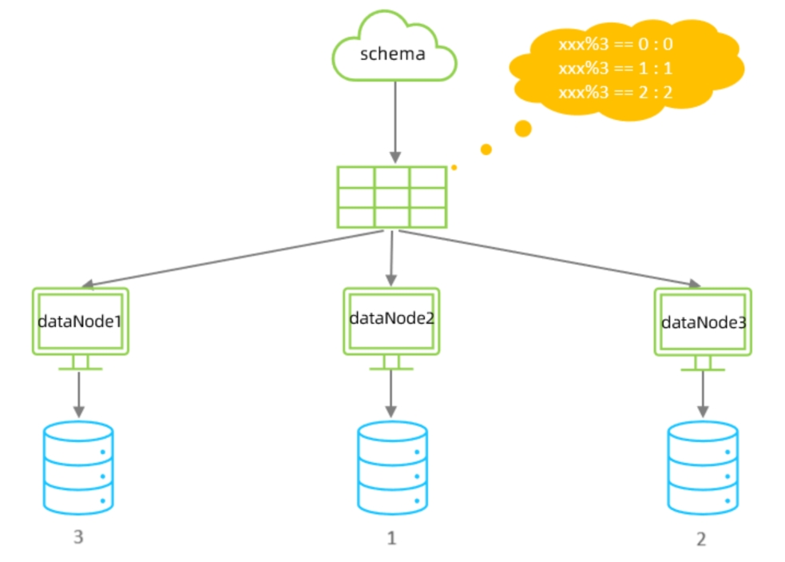
- schema.xml逻辑表配置：
|
|
- rule.xml分片规则配置：
|
|
- 该分片规则，主要是针对于数字类型的字段适用。
一致性hash分片
- 所谓一致性哈希，相同的哈希因子计算值总是被划分到相同的分区表中，不会因为分区节点的增加而改变原来数据的分区位置，有效的解决了分布式数据的拓容问题。
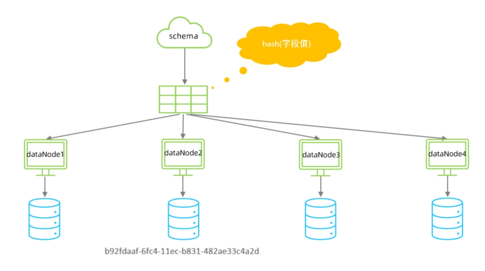
- schema.xml中逻辑表配置：
|
|
- rule.xml中分片规则配置：
|
|
枚举分类
- 通过在配置文件中配置可能的枚举值, 指定数据分布到不同数据节点上, 本规则适用于按照省份、性别、状态拆分数据等业务。
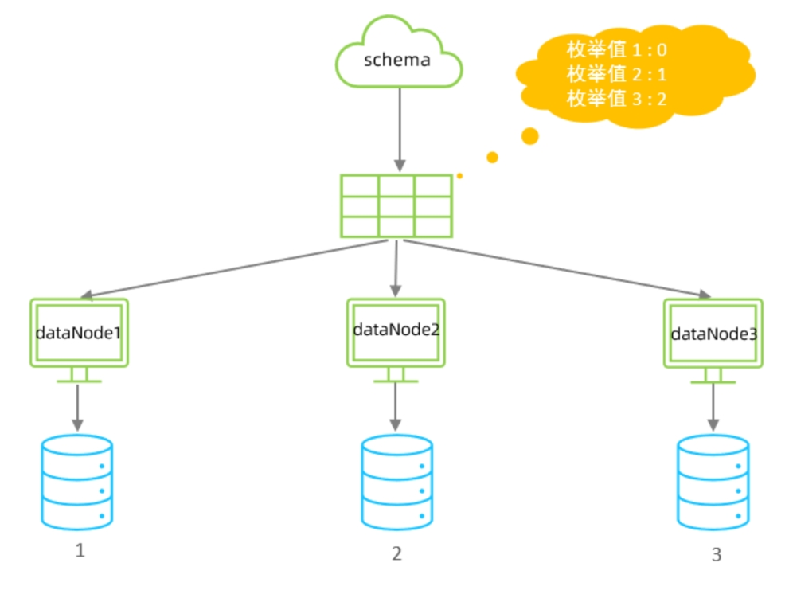
- schema.xml中逻辑表配置：
|
|
- rule.xml中分片规则配置：
|
|
- partition-hash-int.txt，内容如下：
1=0
2=1
3=2
应用指定算法
- 运行阶段由应用自主决定路由到那个分片 , 直接根据字符子串（必须是数字）计算分片号。
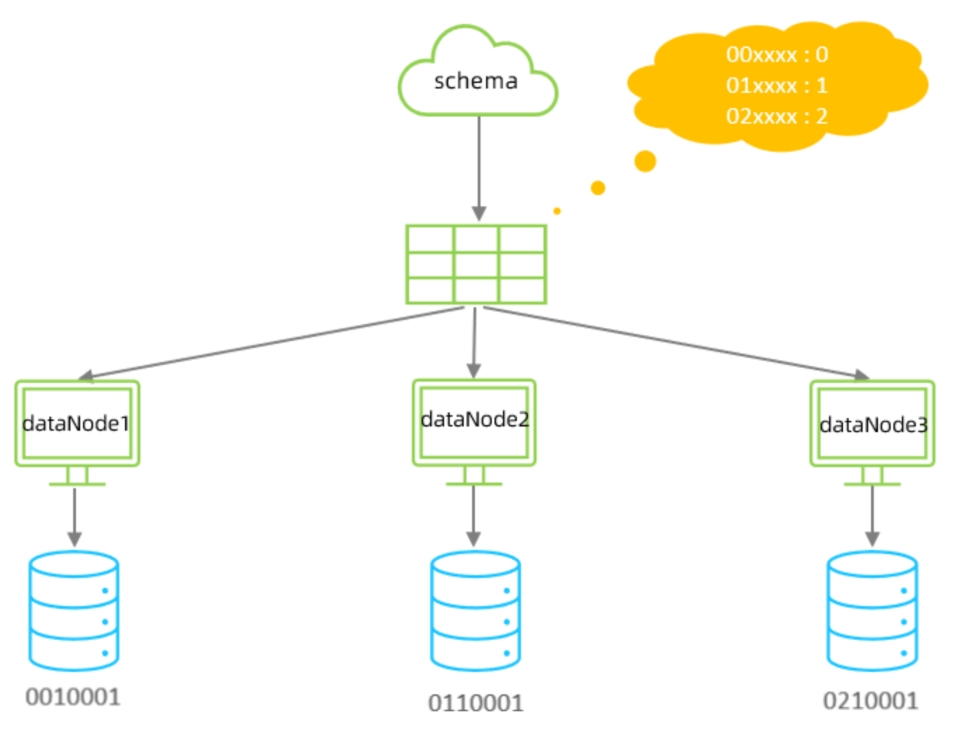
- schema.xml中逻辑表配置：
|
|
- rule.xml中分片规则配置：
|
|
- 示例说明：
- id=05-100000002 , 在此配置中代表根据id中从 startIndex=0，开始，截取siz=2位数字即 05，05就是获取的分区。
- 如果没找到对应的分片则默认分配到defaultPartition。
固定分片hash算法
- 该算法类似于十进制的求模运算，但是为二进制的操作，例如取 id 的二进制低 10 位 与 1111111111 进行位 & 运算，位与运算最小值为 0000000000，最大值为1111111111，转换为十进制，也就是位于0-1023之间。
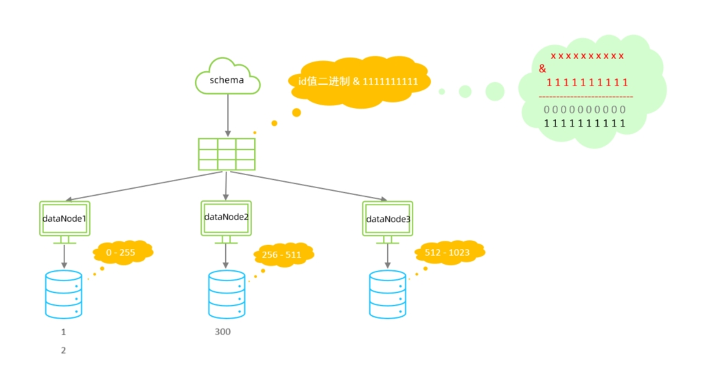
- 特点：
- 如果是求模，连续的值，分别分配到各个不同的分片；但是此算法会将连续的值可能分配到相同的分片，降低事务处理的难度。
- 可以均匀分配，也可以非均匀分配。
- 分片字段必须为数字类型。
- schema.xml中逻辑表配置：
|
|
- rule.xml中分片规则配置：
|
|
- 约束：
- 分片长度 : 默认最大2^10,为 1024 ;
- count, length的数组长度必须是一致的;
字符串hash解析算法
- 截取字符串中的指定位置的子字符串, 进行hash算法，算出分片。
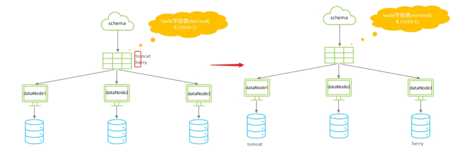
- schema.xml中逻辑表配置：
|
|
- rule.xml中分片规则配置：
|
|
按天分片算法
- 按照日期及对应的时间周期来分片。
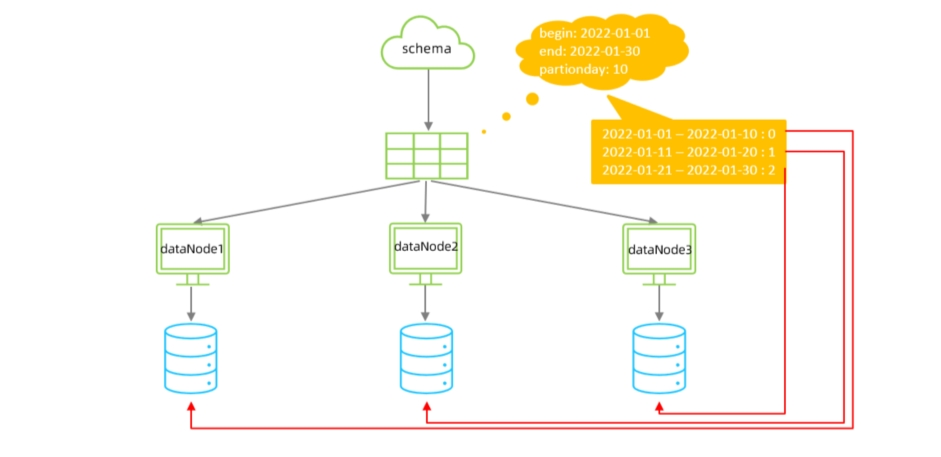
- schema.xml中逻辑表配置：
|
|
- rule.xml中分片规则配置：
|
|
自然月分片
- 使用场景为按照月份来分片, 每个自然月为一个分片。

- schema.xml中逻辑表配置：
|
|
- rule.xml中分片规则配置：
|
|
双主双丛读写分离
- 一个主机 Master1 用于处理所有写请求，它的从机 Slave1 和另一台主机 Master2 还有它的从机 Slave2 负责所有读请求。
- 当 Master1 主机宕机后，Master2 主机负责写请求，Master1、Master2 互为备机。
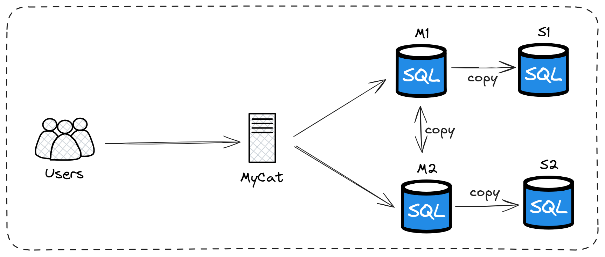
| 名称 | IP | 端口 |
|---|---|---|
| MyCat | 172.16.0.10 | 8066,9066 |
| M1 | 172.16.0.101 | 3306 |
| M2 | 172.16.0.102 | 3307 |
| S1 | 172.16.0.103 | 3308 |
| S2 | 172.16.0.104 | 3309 |
master01
- 修改配置文件 /etc/my.cnf。
|
|
- 创建账户并授权。
|
|
- 查看二进制日志坐标：
|
|
master02
- 修改配置文件 /etc/my.cnf。
|
|
- 创建账户并授权。
|
|
- 查看二进制日志坐标：
|
|
salve01
- 修改配置文件 /etc/my.cnf。
|
|
salve02
- 修改配置文件 /etc/my.cnf。
|
|
从库关联主库
- 在 slave01/slave02上执行：
|
|
两主库相互复制
- M2 复制 M1，M1 复制 M2。
- 在M1/M2上执行：
|
|
测试
- 分别在两台主库M1、M2上执行DDL、DML语句，查看涉及到的数据库服务器的数据同步情况。
|
|
配置读写分离
|
|